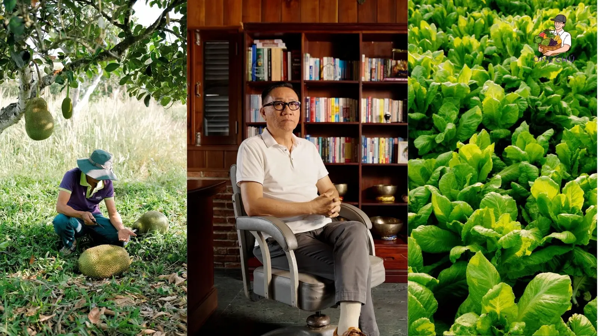
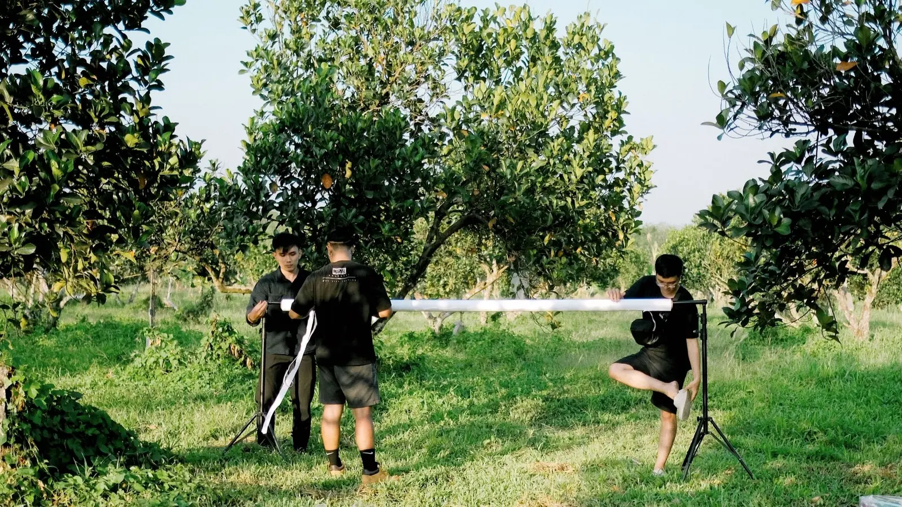
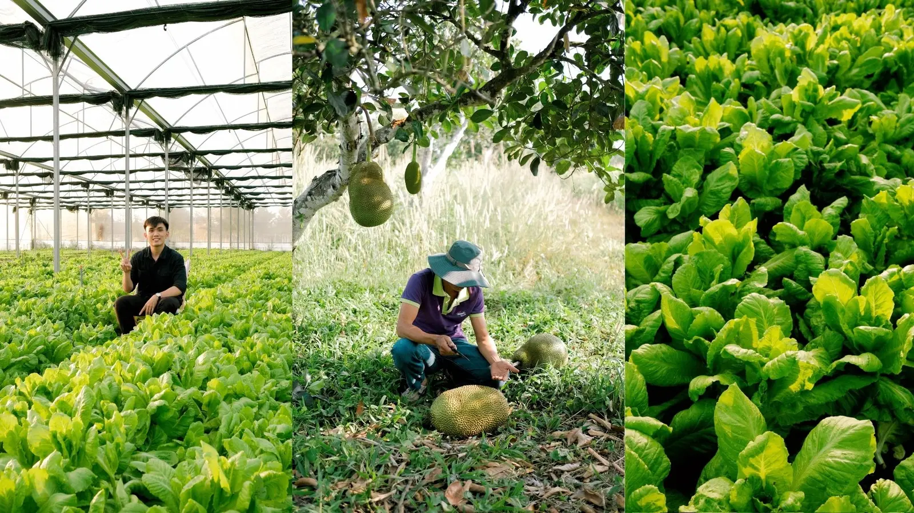
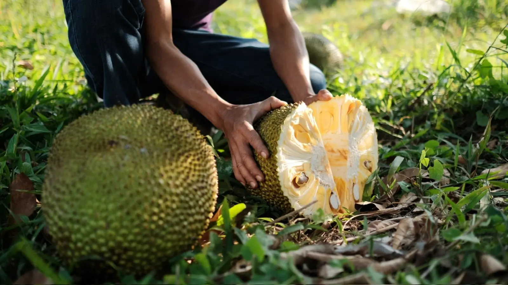
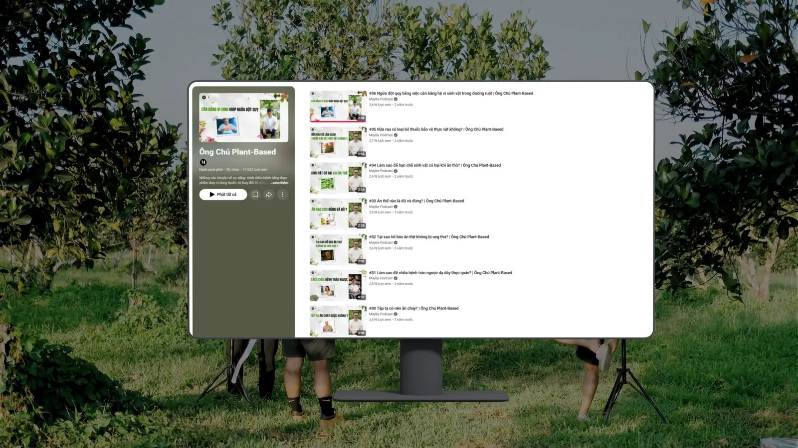
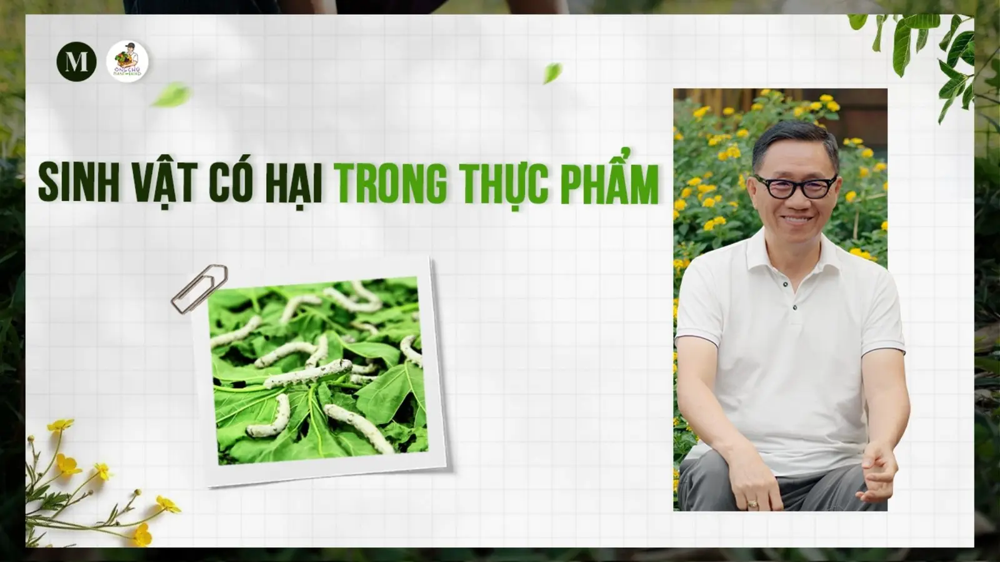
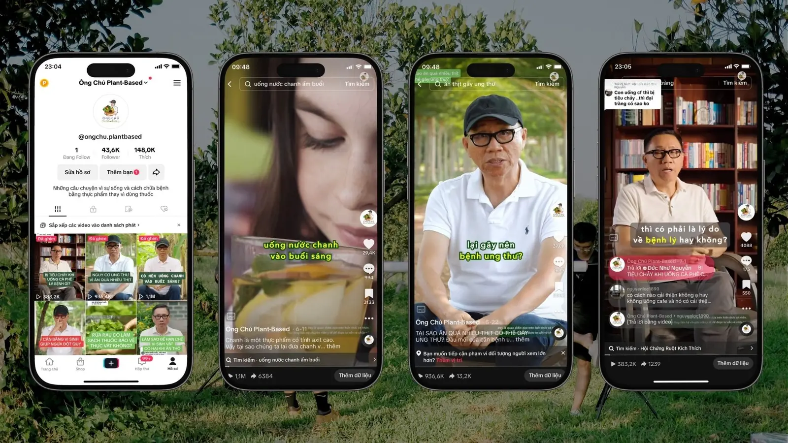
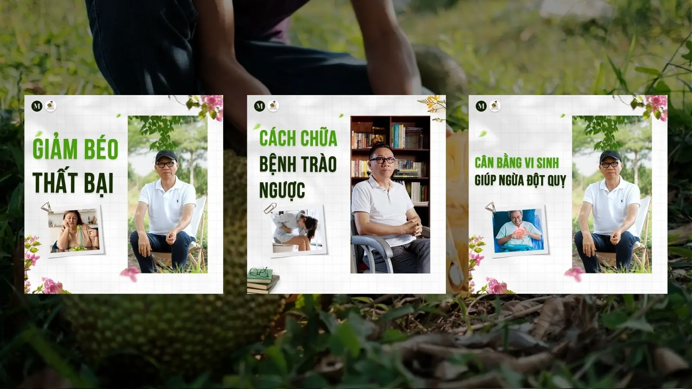

Quay lại danh sách dự án
CASE STUDY · MAYBE GROUP · 06–08/2023
Ông Chú Plant-Based
Short-form Educational Content Growth
Tái cấu trúc nội dung dài của Host thành một series video giáo dục cô đọng, dễ tiếp cận và phù hợp với hành vi xem nội dung ngắn. Dự án kết hợp nghiên cứu nguồn, transcript mapping, xây lại mạch kể chuyện, rough cut và phối hợp hậu kỳ; đồng thời mở rộng sang hai video giới thiệu sản phẩm từ footage nông trại.

01 · PROJECT IMPACT
Từ kênh mới đến hàng triệu lượt xem tự nhiên
TikTok metrics được tổng hợp từ project records và ảnh lưu trữ trong giai đoạn 06–08/2023. Kênh TikTok gốc hiện không còn truy cập công khai theo quyết định nội bộ; các liên kết YouTube được dùng làm mẫu nội dung còn khả dụng.
02 · CONTEXT & CHALLENGE
Biến kiến thức phức tạp thành nội dung dễ theo dõi
Ông Chú Plant-Based là dự án nội dung giáo dục về dinh dưỡng, sức khỏe và lối sống plant-based. Footage dài từ Host cần được chuyển thành video ngắn, đồng thời lồng ghép nhận diện cho sản phẩm nước mía lên men của Vinamit một cách nhất quán.
- Chủ đề sức khỏe cần dễ hiểu nhưng không được diễn giải quá mức.
- Footage dài có đoạn lặp, ngập ngừng và nhiều ý phụ.
- Mỗi video cần có một luận điểm đủ rõ để đứng độc lập.
- Tần suất phát hành đòi hỏi một cấu trúc có thể tái sử dụng.
- Nội dung phải qua bước kiểm tra nguồn và review chuyên môn trước khi xuất bản.
03 · OBJECTIVES
Ba mục tiêu định hướng hệ thống nội dung
Accessible Education
Chuyển kiến thức dài và chuyên môn thành những luận điểm ngắn, dễ hiểu và có giá trị độc lập.
Repeatable Production
Xây cấu trúc biên tập có thể áp dụng liên tục để duy trì chất lượng và tần suất của series.
Platform Reach
Điều chỉnh nội dung và hình thức trình bày để hỗ trợ phân phối trên TikTok, YouTube, Facebook và Instagram.
04 · STRATEGIC APPROACH
Long-form-to-short-form content repurposing workflow
Quy trình bảy bước giúp mỗi video giữ đúng trọng tâm, được kiểm tra nguồn và sẵn sàng cho hậu kỳ trong một hệ thống sản xuất có thể lặp lại.
Research & Source Review
Nghiên cứu, đối chiếu nguồn y khoa và dinh dưỡng đáng tin cậy trước khi gửi nội dung qua vòng review chuyên môn.
Transcript Mapping
Đọc transcript, đánh dấu luận điểm, ví dụ, phần lặp và những đoạn có tiềm năng trở thành hook.
Highlight Extraction
Chọn một ý đủ mạnh và đủ rõ để mỗi short-form video có thể hoạt động như một đơn vị độc lập.
Narrative Reconstruction
Sắp xếp lại thứ tự phát biểu để tạo mạch Hook → Context → Explanation → Payoff.
Rough Cut & Cleanup
Cắt đoạn vấp, lặp từ, khoảng dừng dài và các ý phụ làm loãng nội dung chính.
Visual Reinforcement
Đề xuất B-roll, caption, hình minh họa, punch-in và motion assets theo đúng ngữ cảnh.
Review & Publication
Phối hợp hậu kỳ, kiểm tra phiên bản cuối và hỗ trợ copy/distribution sau khi nội dung được duyệt.
05 · VIDEO ARCHITECTURE
Một cấu trúc ngắn, đủ để giữ mạch và nhận diện
Cấu trúc năm phần tạo nhịp xem rõ ràng: thu hút chú ý, định hướng vấn đề, truyền tải giá trị, chốt luận điểm và duy trì nhận diện series.
Hook / Highlight
Đưa phát biểu đáng chú ý lên đầu để tạo câu hỏi hoặc sự tò mò.
Context
Đặt lại bối cảnh và vấn đề để người xem hiểu chủ đề đang được giải thích.
Explanation
Giữ phần lập luận chính, loại bỏ ý phụ và củng cố bằng visual phù hợp.
Payoff
Kết lại bằng luận điểm hoặc thông tin người xem có thể ghi nhớ.
Brand Outro
Khép lại bằng đoạn nhận diện sản phẩm thống nhất giữa các tập.
06 · EDITORIAL SYSTEM
Bốn nguyên tắc giữ chất lượng và nhận diện nhất quán
Dialogue Cleanup
Loại bỏ đoạn vấp, từ lặp và khoảng dừng không cần thiết để nhịp nói tự nhiên và tập trung hơn.
Narrative Restructuring
Tái sắp xếp các đoạn nói theo logic tiếp nhận của người xem short-form, thay vì giữ nguyên thứ tự footage gốc.
Visual Enhancement
Định hướng caption, keyword emphasis, punch-in, B-roll và animation để minh họa cho nội dung đang được nói.
Series Standardization
Duy trì cấu trúc hook, typography, caption style, nhịp dựng và brand outro để 36 video tạo thành một hệ thống nhất quán.
07 · PRODUCTION CONTEXT
Behind the scenes
Ảnh tư liệu ghi lại quá trình chuẩn bị bối cảnh, thiết bị và quay nội dung ngoài trời. Chúng giúp xác thực quy trình sản xuất thực tế; phạm vi chuyên môn chính của tôi trong dự án vẫn là biên tập nội dung và phối hợp hậu kỳ.



08 · CONTENT DISTRIBUTION
Một hệ thống biên tập, nhiều điểm chạm nội dung


09 · ARCHIVED PERFORMANCE
Bằng chứng kết quả từ dữ liệu lưu trữ

Ảnh được dùng như project record vì kênh TikTok gốc không còn truy cập công khai. Không tái dựng giao diện analytics và không sử dụng claim vượt quá phạm vi dữ liệu đã lưu.
10 · SELECTED EDITORIAL WORK
Ba mẫu nội dung còn truy cập công khai
YouTube links được cung cấp để chứng minh sản phẩm biên tập; chúng không được gắn nhãn “top-performing” vì dữ liệu thành tích chính thuộc TikTok.

11 · PRODUCT FILMS
Farm-to-Product Video Editing
Với hai video giới thiệu sản phẩm Vinamit, tôi rà soát footage đã quay, lựa chọn những cảnh phù hợp và sắp xếp chúng thành mạch kể chuyện từ vùng nguyên liệu đến thành phẩm. Tôi thực hiện rough cut, lựa chọn và ghép nhạc, sau đó phối hợp với Video Editor qua các vòng phản hồi để hoàn thiện bản dựng cuối.
Mít sấy Vinamit
Mạch hình ảnh đi từ nông trại và quá trình thu hoạch đến nguyên liệu thành phẩm và nhận diện thương hiệu.
My contribution: Footage selection · Narrative sequencing · Rough-cut editing · Music integration · Post-production coordinationChuối sấy Vinamit
Mạch kể chuyện theo hành trình từ vườn chuối, thu hoạch và vận chuyển đến sản phẩm được giới thiệu trong bối cảnh nguyên liệu.
My contribution: Footage selection · Narrative sequencing · Rough-cut editing · Music integration · Post-production coordination
Raw Footage ReviewShot SelectionNarrative SequencingRough CutMusic IntegrationEditor HandoffFeedback & Finalization
12 · MY ROLE
Content Editor
- Nghiên cứu và đối chiếu nguồn thông tin trước vòng review chuyên môn.
- Phân tích transcript và xác định luận điểm phù hợp cho từng short-form video.
- Trích xuất highlight, xây lại mạch kể chuyện và chuẩn bị rough cut.
- Loại bỏ đoạn vấp, lặp từ, khoảng dừng dài và phần diễn giải không cần thiết.
- Đề xuất B-roll, caption, hình minh họa và motion assets theo ngữ cảnh.
- Rà soát và lựa chọn footage, xây dựng visual narrative và ghép nhạc cho hai video sản phẩm.
- Phối hợp với Video Editor trong hậu kỳ và kiểm tra phiên bản trước xuất bản.
- Viết nội dung Facebook và hỗ trợ phân phối trên các nền tảng.
13 · KEY LEARNING
Biên tập là thiết kế lại trải nghiệm tiếp nhận
One video, one clear idea. Một short-form video chỉ thực sự mạnh khi người xem có thể nắm được một luận điểm rõ ràng.
Structure creates speed. Workflow và video architecture nhất quán giúp tăng tốc sản xuất mà vẫn giữ chất lượng.
Visuals should clarify. B-roll, caption và animation chỉ có giá trị khi làm nội dung dễ hiểu hơn, không phải chỉ để trang trí.